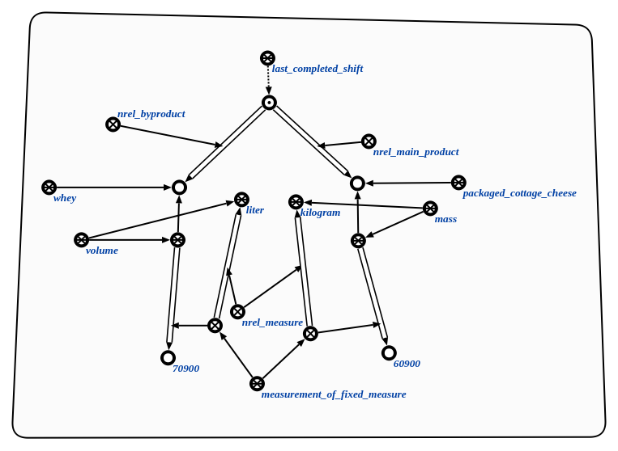

Команда поиска результатов заданного процесса предназначена для поиска результатов заданного процесса. Единственным аргументом команды является процесс, для которого необходимо найти результаты. Результатом выполнения команды является структура, включающая все сущности, связанные с указанным процессом отношениями, принадлежащими классу отношение процесс-результат. Для каждой такой сущности в данную структуру также значения всевозможных параметров, описывающих ее свойства. Например:
